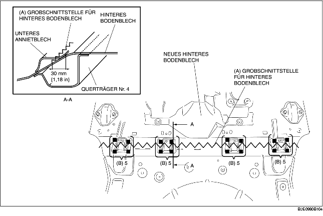
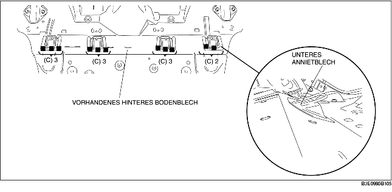
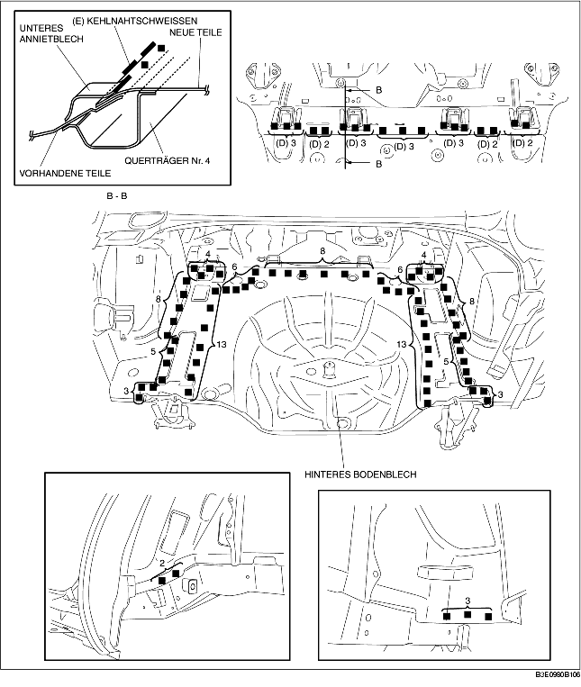

1. Zur Vorbereitung für den Einbau Bereich (A) des neuen hinteren Bodenblechs schneiden, die 20 mit (B) markierten Stellen aufbohren und das untere Annietblech entfernen.

2. Die 11 mit (A) gekennzeichneten Schweißstellen aufbohren.
3. Das untere Annietblech mit einem Meißel oder ähnliche Werkzeug dort trennen, wo es zusammengefügt ist und nach oben biegen, um den Einbauen zu erleichtern.

4. Punktdichtmittel auf die überlappenden Enden neuer und bereits vorhandener Teile auftragen, die geschweißt werden. Die zu schweißenden Stellen verkleben und an 18 mit (D) gekennzeichneten Stellen Schweißpunkte sezten. Die Nähte des unteren Annietblechs und neue und vorhandene Teile an den mit (E) markierten Stellen mit einer Hohlkehlschweißung versehen.
5. Die verbleibenden Schweißstellen schweißen und das hintere Bodenblech einbauen.
